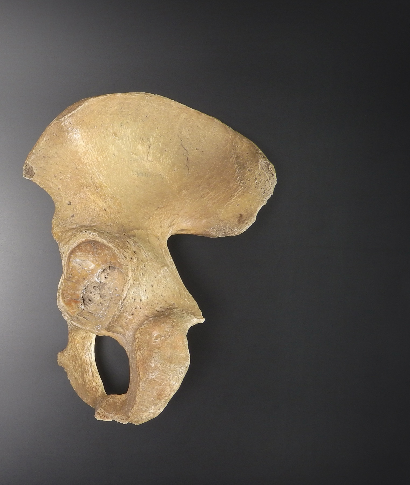

Página 6 · Parte A · Paredes
quadril ESQUERDO · visto DE FORA · frente da paciente à esquerda
Um osso feito de três: o T do acetábulo — e de que lado se olha
E6 — Mnemônico-âncora primeiro. Bloco tipográfico no topo, inseparável do seu cabeçalho de ponto de vista: > `osso do quadril ESQUERDO · visto DE FORA · frente da paciente à sua esquerda` > T no acetábulo → conte 1, 2, 3 em sentido horário → Ílio · Ísquio · Púbis > (1-2-3 também é ordem alfabética: ílio → ísquio → púbis)
Saia do corte de perfil: pegue um osso e olhe de fora
Atenção, o ângulo muda aqui. Até agora a pelve esteve de perfil, cortada ao meio, com a frente da paciente à esquerda. Abandone esse corte. Pegue um dos ossos do quadril, sozinho, fora da pelve, e olhe para ele de fora — pela face que ficaria virada para a coxa. É um osso achatado, irregular, com uma cavidade redonda funda mais ou menos no meio. Tudo o que vem nesta página acontece nesse ângulo, e não no corte anterior. Quando o corte voltar, isso será dito.
Um osso que nasce de três
O osso do quadril não nasce inteiro: ele é a fusão de três ossos — o ílio, o ísquio e o púbis. Na criança, os três são peças separadas unidas por cartilagem; a fusão se completa por volta dos 15 aos 17 anos, e a partir daí é uma peça só. Isso tem uma consequência prática que vale registrar antes do macete: num osso adulto, as linhas de fusão desapareceram. Você não vai ver as três divisões numa peça real — elas existem como territórios, não como fronteiras visíveis. Por isso a divisão precisa ser deduzida, e por isso existe um macete.
O acetábulo e a linha que divide os três territórios
Nessa vista lateral aparece um espaço muito importante: o acetábulo — a cavidade redonda e funda. Ele é a peça que permite a junção entre o osso do quadril e o fêmur: é ali que a cabeça do fêmur se encaixa. E é exatamente ali que se encontra a articulação do quadril, que é por onde a carga do tronco sai da pelve e entra no membro inferior. Agora o ponto: para dividir a topografia dos três ossos que se fundiram, usa-se uma linha traçada através do acetábulo. É essa linha que separa os três territórios — e ela não é arbitrária: passa exatamente onde as três peças originais se encontravam, na cartilagem em que a fusão aconteceu.
O T, o sentido horário — e a pergunta que ninguém responde: de que lado se olha? O macete: traça-se um T no acetábulo e conta-se 1, 2, 3 em sentido horário — ílio, ísquio, púbis. O T tem uma haste que sobe e dois braços que descem, e cada setor delimitado por ele é o território de um dos três ossos.
E aqui cabe uma admissão honesta, porque ela é mais útil do que qualquer encorajamento: decorar essa sequência é difícil. Não é difícil só para quem está começando — é difícil para quem já atravessou esse estudo, e o macete existe exatamente porque foi difícil, não porque alguém achou fácil. Se você travou aqui, você travou no lugar certo. É difícil mesmo, e por isso existe um jeito.
Só que o macete, do jeito que costuma ser transmitido, tem um defeito grave e barato de consertar: "sentido horário" só existe em relação a um observador. Contar em sentido horário de que lado? Olhando o osso direito ou o esquerdo? De fora ou de dentro? Se você virar o osso, o horário vira anti-horário e a sequência sai espelhada — e um macete que erra metade das vezes é pior do que nenhum, porque dá confiança falsa.
Então fica declarado, e este cabeçalho é parte do macete, não legenda dele: osso do quadril ESQUERDO, visto DE FORA (face lateral), com a frente da paciente à sua esquerda. Nesse enquadramento — e só nele — a contagem ílio → ísquio → púbis em sentido horário a partir do topo bate com a topografia real. Se a figura que você estiver olhando for de um quadril direito, ou for a face interna, inverta o sentido. Não existe convenção universal para isso na literatura; a convenção é da leitura que você fizer, e por isso ela tem de estar escrita ao lado do desenho, sempre.
A segunda chave: ordem alfabética
Existe uma segunda chave que confere a primeira, e é ela que dá robustez ao macete: a sequência 1-2-3 está em ordem alfabética — íLio, íSquio, Púbis. L, S, P. Duas chaves independentes que se verificam mutuamente: se o sentido horário e a ordem alfabética não baterem, a contagem saiu espelhada e você está olhando o osso pelo outro lado. Use sempre as duas — entregar só uma reduz o macete à metade da utilidade.
Onde cada um mora, e o que se faz com o ílio
O ílio ocupa a porção mais superior — é a parte larga, em forma de leque, que sobe. O ísquio ocupa a porção mais posterior e inferior — atrás e embaixo. O púbis ocupa a porção inferior, mas anterior — embaixo e à frente, e é ele que vai à sínfise. Três posições distintas, e vale repeti-las em voz alta: ílio em cima, ísquio atrás e embaixo, púbis embaixo e na frente.
O ílio não é o mais importante dos três — e essa declaração é útil, porque diz onde não gastar energia. Ele faz parte da pelve maior, também chamada pelve falsa. E "falsa" é uma palavra que não pode ficar sem par: falsa em relação a quê? A resposta é a linha que divide a pelve em duas metades, e ela vem em seguida. Por ora, o essencial: a pelve maior tem pouca relevância obstétrica e ginecológica — nem em obstetrícia nem em ginecologia ela é o que decide.
O ílio tem, porém, uma utilidade prática concreta: ele é local de referência em procedimentos anestésicos. O exemplo é cotidiano: paciente que vai ser submetida a parto cesáreo e vai receber raquianestesia — palpa-se a crista ilíaca, a borda superior do ílio, como ponto de referência para escolher o nível da punção. É a mesma topografia óssea que a anestesiologia usa o tempo todo.

Vista lateral do coxal esquerdo: face externa, frente da paciente à esquerda do quadro.
Charles Anatomical Illustrations / CC0 (Wikimedia/domínio público conforme proveniência).
Quiz — fixação
O macete do T do acetábulo instrui a contar 1-2-3 em sentido horário para obter ílio, ísquio e púbis. Qual informação, se estiver ausente, inutiliza o macete?
- Gabarito B. "Sentido horário" é uma instrução dependente de observador: ela só tem significado depois que se sabe se o osso é o direito ou o esquerdo e se a face vista é a externa ou a interna. Trocar qualquer um dos dois espelha a figura, e a contagem sai invertida — com aparência de acerto. É por isso que o cabeçalho de ponto de vista é parte do macete, e não legenda dele.
- (A) é dado real e útil (fusão completa por volta dos 15–17 anos), mas não altera em nada a direção da contagem.
- (C) é irrelevante: o T se traça no acetábulo qualquer que seja seu tamanho.
- (D) confunde posição da paciente com face do osso — o macete se aplica a um osso isolado, fora do corpo; a posição de quem o carrega não muda a geometria da peça.
- Por que cair na (D): o conteúdo inteiro insiste em declarar planos e posições, e o aluno generaliza que a posição relevante é sempre a da paciente. Aqui não é: o objeto observado é uma peça isolada, e o que importa é lado e face.
Um aluno conta os territórios do acetábulo numa figura e obtém, em sentido horário, ílio → púbis → ísquio. O que essa leitura indica?
- Gabarito C. A segunda chave existe para diagnosticar exatamente isso: a ordem alfabética é íLio → íSquio → Púbis, e uma leitura que devolve ílio → púbis → ísquio inverteu os dois últimos, que é a assinatura de imagem espelhada. Nesse caso o correto não é recontar do mesmo jeito, é inverter o sentido — contar em anti-horário devolve a sequência certa.
- (A) inventa uma variação que não existe: a topografia dos três territórios é constante, e nenhuma variação anatômica troca ísquio com púbis.
- (B) é tentador porque parte do princípio de que o erro é de execução, mas mudar o braço de partida do T altera qual osso vem primeiro, e não a ordem relativa entre os dois seguintes — o sintoma descrito é de espelhamento, não de ponto de partida.
- (D) é falsa: a fusão muda com a idade, a posição relativa dos três territórios não.
- Por que cair na (B): a hipótese mais confortável é sempre "eu contei errado", e ela impede o aluno de suspeitar da figura. A lição transversal é o oposto — quando as duas chaves brigam, a suspeita recai sobre o enquadramento, não sobre a contagem.
Uma paciente será submetida a cesariana sob raquianestesia. Qual referência óssea é palpada para orientar o nível da punção?
- Gabarito C. A crista ilíaca é a borda superior do ílio, palpável por fora, com a mão sobre a pele da paciente — é a única das quatro que serve a um procedimento executado nas costas, com a paciente sentada ou em decúbito lateral. É também a utilidade prática que redime o ílio, que em obstetrícia é o menos importante dos três ossos fundidos.
- (A) é palpável por fora, mas fica na frente e embaixo: não orienta punção lombar nenhuma.
- (B) só é alcançável por dentro, ao toque vaginal, e serve à avaliação da descida fetal — não há como usá-la como referência externa.
- (D) também só é alcançável por dentro, e ainda assim com dificuldade; é a referência da medida da bacia e do ponto de fixação de tela, não da punção.
- Por que cair na (B): espinha isquiática é a referência óssea mais citada em obstetrícia, e o reflexo é oferecê-la para qualquer pergunta que peça "referência óssea". A régua que separa: crista ilíaca se acha por fora; espinha e promontório, por dentro.